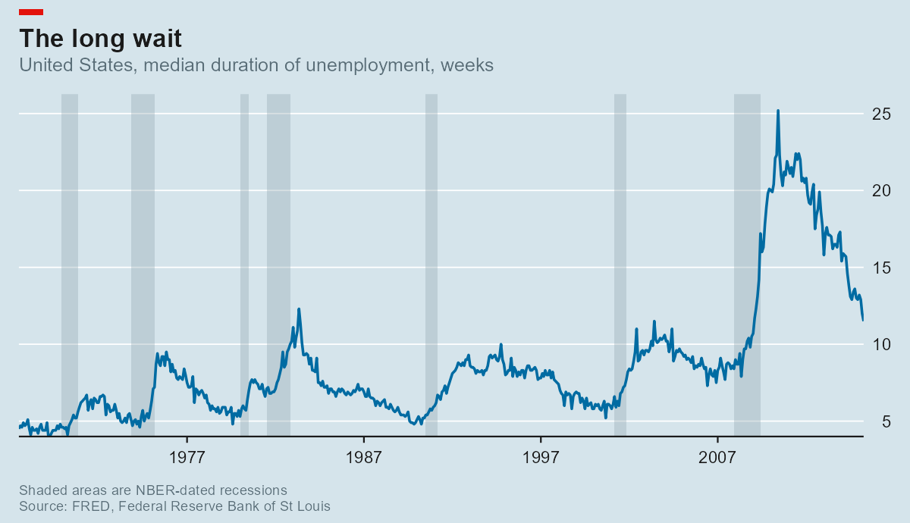
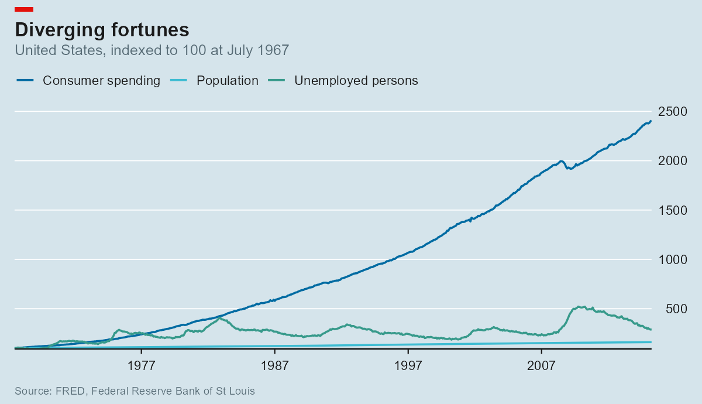
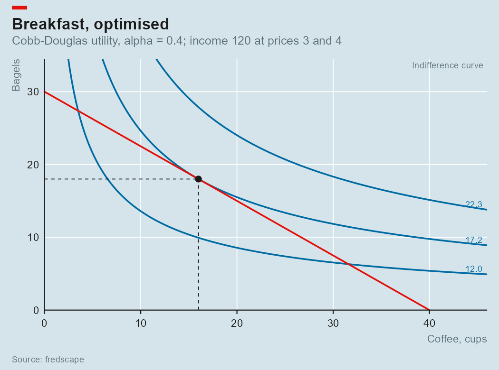
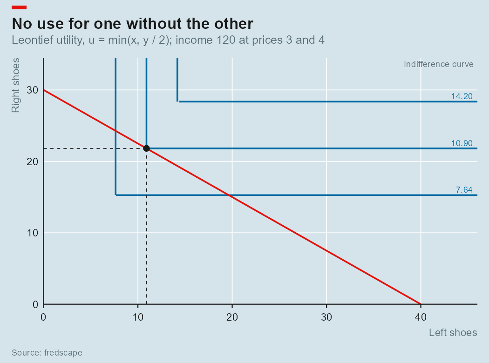
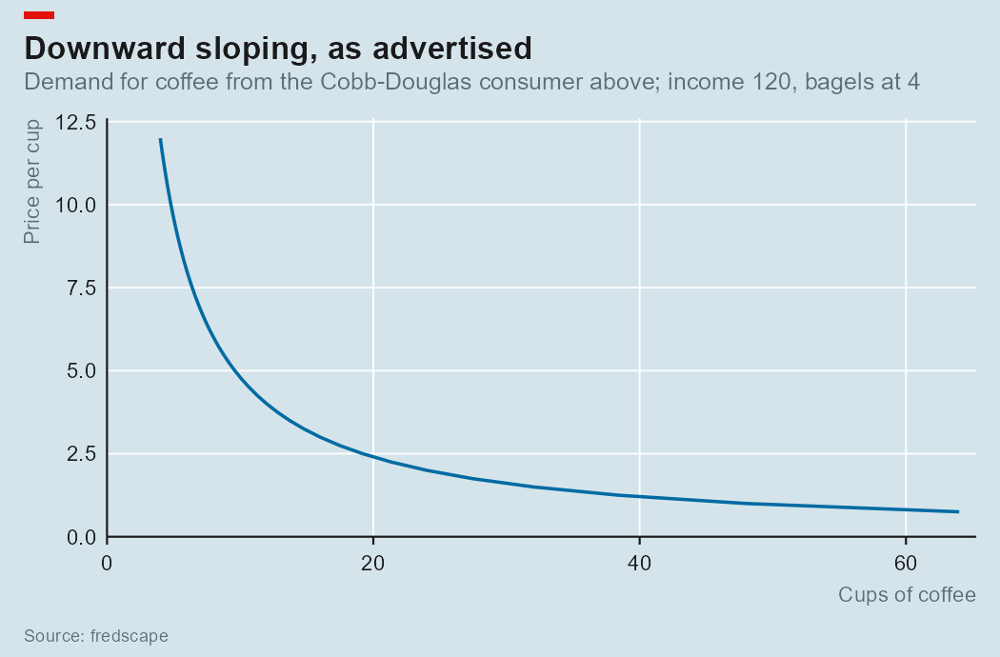
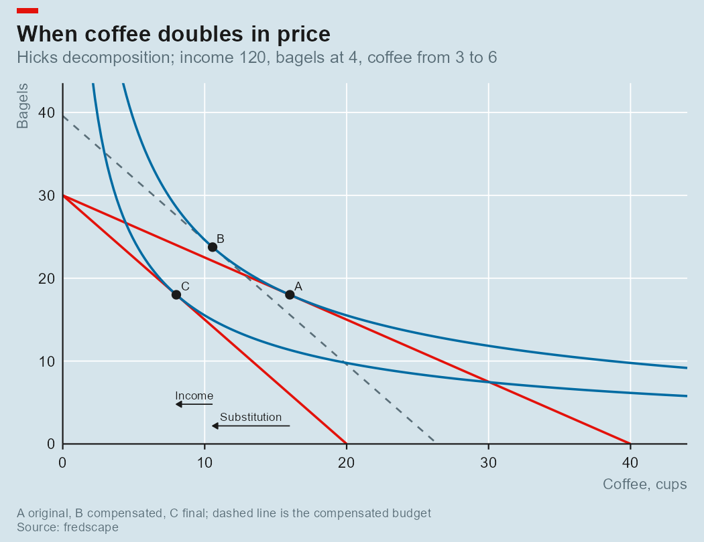
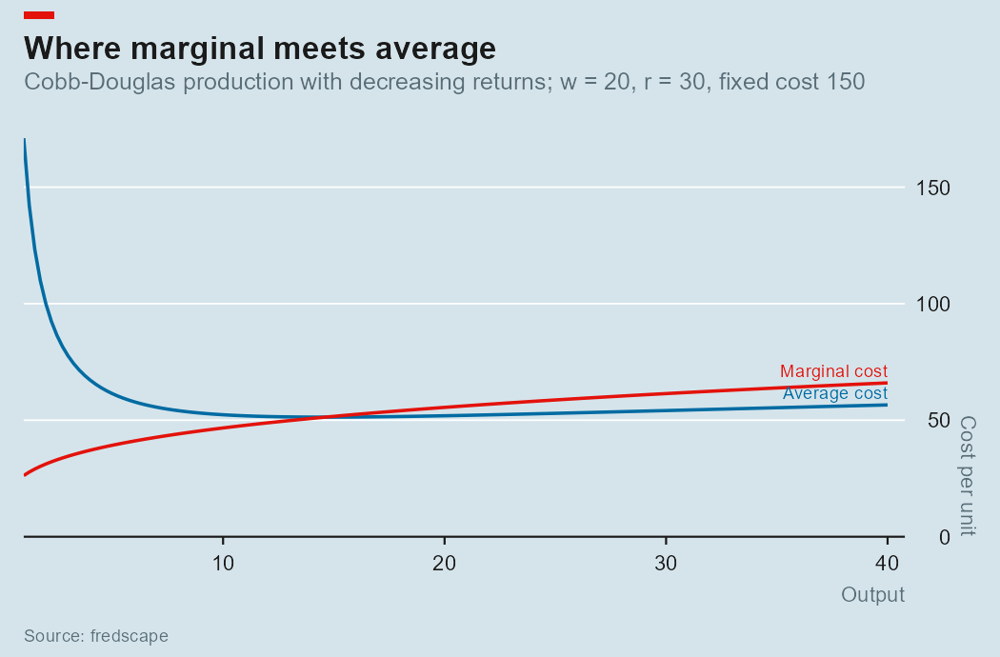
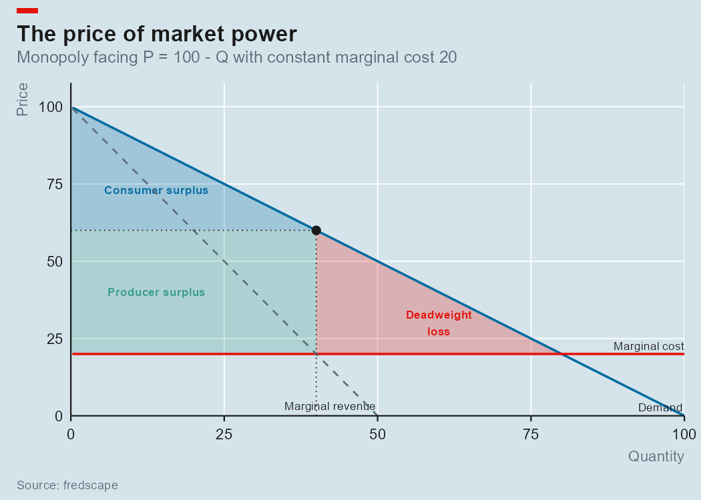
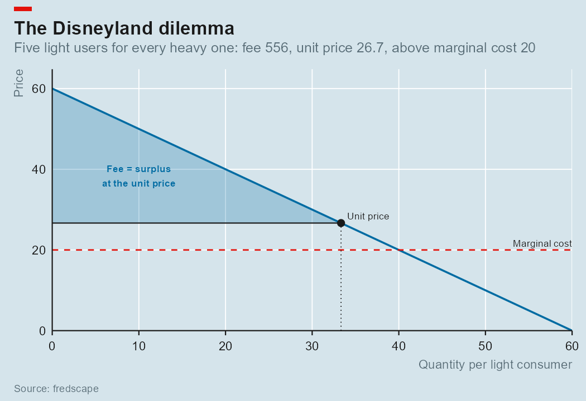
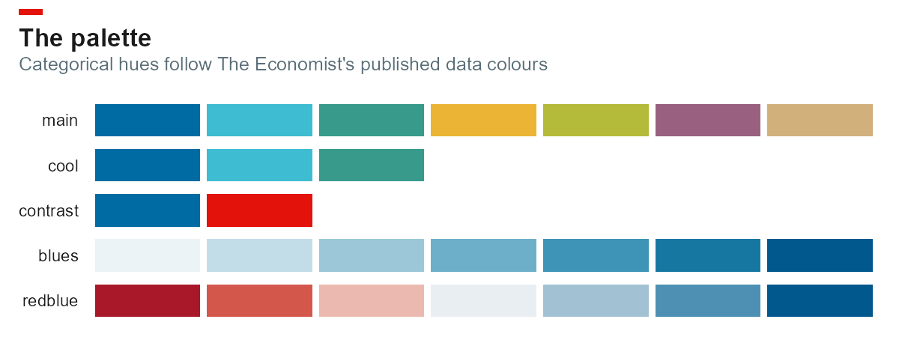

Pull economic series from FRED into tidy data frames, and plot them in the house style of The Economist — without hand- theming every chart.
Two halves that work on their own:
-
A FRED client.
fred_series(),fred_series_info()andfred_search()return plain data frames. One row per series per date, so a multi-series chart is oneggplot()call. -
A chart style.
theme_econ(),scale_colour_econ(),labs_econ(),annotate_recessions()andecon_masthead()reproduce the printed chart furniture: blue-grey panel, horizontal gridlines only, right-hand y-axis, left-hung title, red masthead block.

Getting a key
FRED needs a free API key. Request one at fredaccount.stlouisfed.org/apikeys, then put it somewhere the package can find it:
usethis::edit_r_environ() # add: FRED_API_KEY=your32characterkeyThe key is read from the FRED_API_KEY environment variable, so it never has to appear in a script or a git history. fred_set_key() sets it for one session; fred_has_key() reports whether one is available.
Quick start
library(fredscape)
library(ggplot2)
unrate <- fred_series("UNRATE", start = "1970-01-01")
head(unrate)
#> series_id date value
#> 1 UNRATE 1970-01-01 3.9
#> 2 UNRATE 1970-02-01 4.2
#> 3 UNRATE 1970-03-01 4.4
p <- ggplot(unrate, aes(date, value)) +
annotate_recessions(from = min(unrate$date), to = max(unrate$date)) +
geom_line(colour = econ_colours("blue"), linewidth = 0.8) +
scale_x_econ_date() +
scale_y_econ() +
labs_econ(
title = "Out of work",
subtitle = "United States, unemployment rate, %",
note = "Shaded areas are NBER-dated recessions",
source = "FRED, Federal Reserve Bank of St Louis"
) +
theme_econ()
econ_masthead(p)Several series at once, with FRED doing the transformation server-side:
inflation <- fred_series(
c("CPIAUCSL", "PCEPI"),
start = "2015-01-01",
units = "pc1" # % change from a year ago
)
ggplot(inflation, aes(date, value, colour = series_id)) +
geom_line(linewidth = 0.8) +
scale_colour_econ() +
scale_y_econ() +
theme_econ()Don’t know the series ID? fred_search("real median household income") returns titles, units, frequency and coverage for the matches.

Theory, not just data
The same style works for the textbook diagrams. cobb_douglas() builds a utility (or production) function that remembers its parameters, budget() describes a budget constraint (or isocost line), and the closed-form results follow: indifference curves, the optimal bundle, the marginal rate of substitution.
u <- cobb_douglas(alpha = 0.4) # U = x^0.4 * y^0.6
b <- budget(income = 120, px = 3, py = 4)
optimal_bundle(u, b)
#> x y utility
#> 1 16 18 17.17163
mrs(u, 16, 18) # = px / py at the optimum
#> [1] 0.75
indifference_curve(u, level = c(10, 15), x = c(5, 10, 20))plot_consumer_choice() composes the whole chart; geom_indifference(), geom_budget() and geom_optimum() are the pieces if you’d rather build it up yourself.

The other textbook preferences come with the same closed forms:
ces(rho = -1, alpha = 0.4) # constant elasticity of substitution
leontief(a = 1, b = 2) # perfect complements: one x per two y
perfect_substitutes(a = 1, b = 2) # linear; picks a corner
quasilinear(log, f_prime = function(x) 1 / x) # f(x) + y; no income effect on xces() nests the others — Cobb-Douglas as rho → 0, substitutes at rho = 1, Leontief as rho → −∞ — and the tests check each limit against the dedicated constructor. Leontief’s L-shaped contours draw properly, including the vertical arm, and its mrs() gives the textbook answer: Inf below the ray, 0 above it, NA at the kink.

Anything that isn’t one of these still works: pass any function of x and y and the contours are found by bisection, the optimum by a line search along the budget line — and every closed form above is tested against that generic path.
Ask the optimum the same question many times and you get the derived curves:
demand_curve(u, b, prices = seq(0.5, 12, by = 0.5)) # (price, quantity)
engel_curve(u, b, incomes = seq(40, 400, by = 40)) # (income, quantity)
income_consumption_path(u, b, incomes = c(60, 120, 180)) # the bundles themselvesgeom_demand() draws price against quantity the way the textbooks do; geom_budget() takes a list of budgets so the family of lines behind a path is one layer.

And the diagram every intermediate course draws: what a price change does, split into the part that is about relative prices and the part that is about being poorer.
pc <- hicks(u, b, new_px = 6) # or slutsky()
pc$effects
#> effect dx dy
#> 1 substitution -5.444 5.751
#> 2 income -2.556 -5.751
#> 3 total -8.000 0.000
plot_price_change(u, b, new_px = 6)Hicks compensation holds utility fixed; Slutsky holds purchasing power fixed. Both rest on expenditure(), the expenditure function, which has a dedicated method for every constructor and doubles as the total-cost function on the producer side.

The producer’s side is the same mathematics with different names — a production function is a utility function over inputs, an isocost line is a budget line, the expenditure function is the total-cost function — so it comes for free:
f <- cobb_douglas(0.3, 0.5, A = 2, kind = "production") # decreasing returns
plot_producer_choice(f, budget(600, 20, 30)) # isoquants + isocost
cost_curves(f, w = 20, r = 30, q = 1:40, fixed = 150) # total, average, marginal
Put a demand curve in front of those costs and you have a market:
d <- linear_demand(intercept = 100, slope = 1) # P = 100 - Q
cst <- quadratic_cost(a = 20) # constant marginal cost
monopoly(d, cst) # MR = MC: Q = 40, P = 60, deadweight loss 800
cournot(d, cst, n = 3) # symmetric Nash equilibrium
perfect_competition(d, cst, n = 10) # P = MC, no deadweight loss
perfect_competition(d, quadratic_cost(fixed = 100, a = 20, b = 1)) # free entry: P = min AC
compare_structures(d, cst, n = c(2, 3, 5, 10))Every structure returns the same market_outcome — price, quantities, profit, consumer and producer surplus, deadweight loss against the P = MC benchmark, the Lerner index — and plot_market() draws it with the welfare areas shaded. Costs can also come straight from a production function via production_cost(), and any decreasing function(q) works as demand.

A monopolist with more than one price:
first_degree(d, cst) # every unit at willingness to pay
third_degree(list(students = linear_demand(60, 0.5), # segment by elasticity
others = d), cst)
two_part_tariff(d, cst) # fee = surplus, price = MC
two_part_tariff(list(light = linear_demand(60, 1), # who to serve, and at what price
heavy = d), cst, n = c(5, 1))third_degree() carries the uniform-price benchmark (via aggregate_demand(), the horizontal sum), so the gain from segmenting is explicit and the inverse-elasticity rule holds segment by segment. two_part_tariff() weighs serving everyone — fee pinned to the lightest user, unit price above marginal cost — against excluding the light users and taking the heavy users’ whole surplus.

The palette

The categorical hues (main, cool, contrast) follow the data palette The Economist publishes for its own charts. The sequential (blues) and diverging (redblue) ramps are built from those hues rather than copied from a published ramp — Economist-flavoured rather than Economist-official.
econ_colours("red", "blue")
econ_pal("blues")(9)
scale_colour_econ() # discrete
scale_fill_econ_c("redblue") # continuous, divergingWhat’s in the box
fred_series() |
Observations for one or more series, tidy and stacked |
fred_series_info() |
Title, units, frequency, seasonal adjustment, coverage |
fred_search() |
Full-text search over the FRED catalogue |
fred_recessions() |
NBER turning points, read live from USREC
|
fred_key() / fred_set_key() / fred_has_key()
|
Key handling |
theme_econ() |
The theme. panel = "blue", "white" or "dark"
|
scale_y_econ() / scale_x_econ_date()
|
Right-hand y labels, no x padding |
labs_econ() |
Title, subtitle, and a properly formatted source line |
scale_colour_econ() and friends |
Discrete and continuous colour scales |
annotate_recessions() |
Recession bands behind the data |
econ_masthead() |
The red block above the title |
nber_recessions |
Every NBER-dated US contraction since 1857 |
cobb_douglas() / ces() / leontief() / perfect_substitutes() / quasilinear()
|
Utility or production functions that carry their parameters |
budget() |
A budget or isocost constraint |
indifference_curve() / optimal_bundle() / mrs()
|
Contours, the chosen bundle, marginal rate of substitution — closed form for Cobb-Douglas, numeric for anything else |
demand_curve() / engel_curve() / *_consumption_path()
|
Curves traced by the optimum as a price or income moves |
price_change() / hicks() / slutsky() / plot_price_change()
|
Substitution and income effects of a price change |
expenditure() |
The expenditure function: least income to reach a utility (or least outlay for an output) |
expansion_path() / conditional_demand() / cost_curves()
|
Producer theory: input demands and total / average / marginal cost |
plot_producer_choice() / plot_cost_curves()
|
Isoquants with an isocost line; the AC / MC pair |
linear_demand() / demand_fn() / quadratic_cost() / production_cost()
|
Market demand and firm cost objects, with price_at(), marginal_revenue(), elasticity(), marginal_cost() and friends |
monopoly() / cournot() / perfect_competition() / compare_structures()
|
Market equilibria with surplus, deadweight loss and the Lerner index |
plot_market() |
Demand, MR, MC and the shaded welfare areas |
first_degree() / third_degree() / two_part_tariff() / aggregate_demand()
|
Price discrimination, with the uniform-price benchmark |
plot_two_part_tariff() |
The fee as shaded surplus above the unit price |
geom_indifference() / geom_budget() / geom_optimum() / geom_demand() / geom_engel() / geom_consumption_path()
|
The pieces as ggplot layers |
plot_consumer_choice() |
The textbook diagram in one call |
Design notes
The masthead is not a layer. The red block sits above the title, outside the plotting area, so it cannot be added with +. econ_masthead() converts the plot to a grob table and inserts the block as a new row aligned to the title’s left edge. It therefore has to come last — the result is a grid object, not a ggplot, and ggsave() still accepts it.
Recession dates work offline. nber_recessions is a bundled table of all 34 NBER-dated contractions from 1857 to 2020, so annotate_recessions() needs no key and no network. fred_recessions() reads the same turning points live from USREC when currency matters more than convenience — it collapses runs of the 0/1 indicator back into peak/trough intervals.
No font is assumed. The Economist sets in a proprietary face (Officina Sans / EconSans). theme_econ(base_family = "") uses the device default rather than silently falling back from a font you don’t have. Pass a family you actually have installed to get closer.
The key stays out of messages. It travels as a query parameter, so it can end up echoed in an API error. Error bodies are scrubbed of anything key-shaped before they reach you, and a malformed key is rejected locally with a message that reports its length, not its value.
Testing
The full suite runs with no network. The API parsers run against saved payloads in tests/testthat/fixtures/; the argument validators are checked to fire before any request is built; the recession logic is round-tripped through a reconstructed USREC indicator.
The figures above are rendered by data-raw/readme_figures.R from ggplot2’s bundled economics data set — itself an extract of five FRED series — so the README can be rebuilt with no key and no network.
Each feature PR was put through an adversarial review before merging (generalist and security reviewers, then a meta-critic curating the findings). The run records live in adversarial-review-log/ on purpose — they are the review trail, and several of the fixes in NEWS.md cite them by ID.
Sources and attribution
Series data comes from the Federal Reserve Bank of St Louis. FRED is a registered trademark of the Federal Reserve Bank of St Louis; this package is not affiliated with or endorsed by it, and neither is The Economist. Check the terms of the underlying source before redistributing any series — fred_series_info()$notes usually names it.
Recession dates: National Bureau of Economic Research, US Business Cycle Expansions and Contractions.